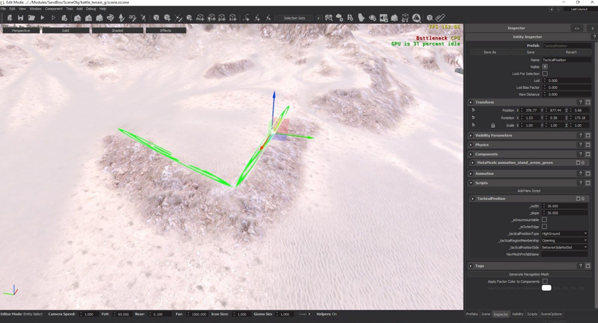
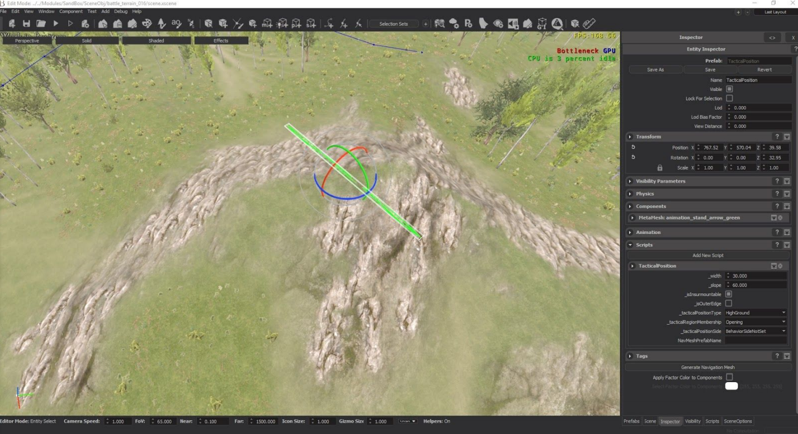
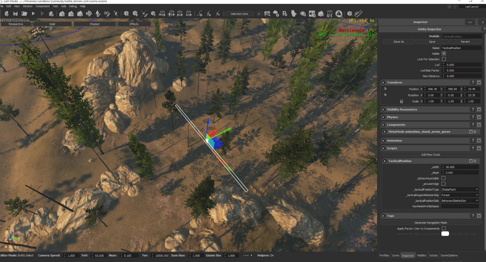
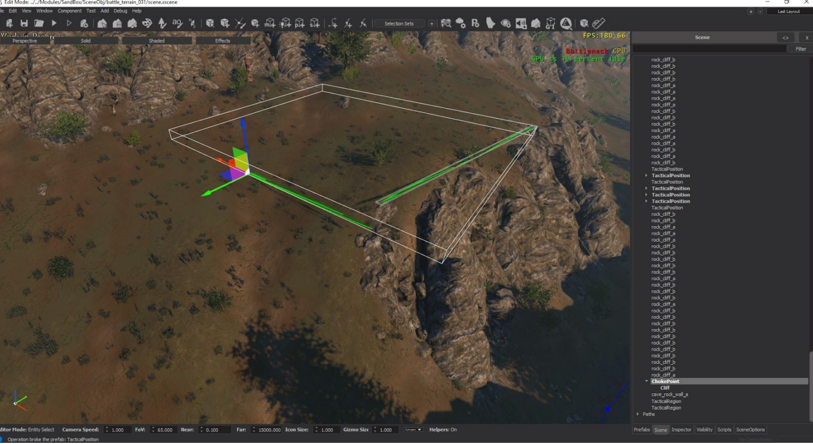
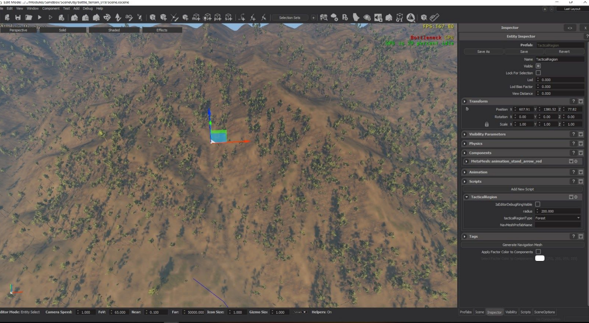
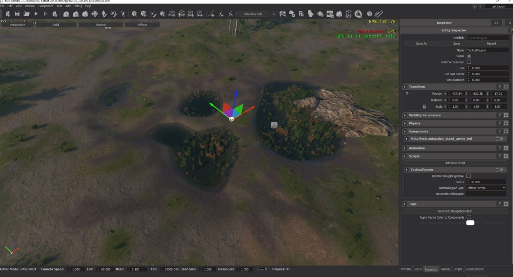
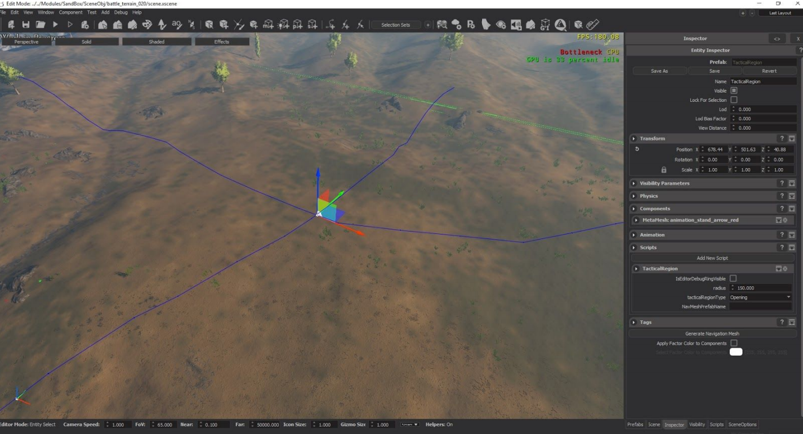

MISSION TACTICAL POSITIONS
TACTICAL POSITIONS AND TACTICAL REGIONS
These are scripted entities that let the AI know of the terrain’s features. They do not work like siege, the AI will not always use the tactical positions or regions you may place. They may use them under conditions that favor the use of these.
Depending on player movement and spawn path randomization, there are a very high number of scenarios that can occur during battles. Because of this, it is better to have as many meaningful positions and regions marked as possible but not having these or not marking some of the meaningful positions will not result in obvious errors like in siege but will result in less interesting battles because AI won’t be aware of their surroundings. Types and how to use different tactical positions and regions:
Tactical Positions
High Ground, Slope facing direction
These are for advantageous high ground positions facing one direction. The AI may hold these positions if the enemy is approaching from the direction the tactical position is facing. Direction is the most important part. The position to defend will face the forward direction(green arrow in editor) of the position. Paramaters are as follows:
Info
- _width: the AI will try to form itself to the full extent of the width and if it’s too narrow and AI has too many troops or if it’s too wide and AI doesn’t have enough troops AI may think it’s a poorly suitable position.
- _slope: is also important for choosing between positions, it is in degrees and maximum of 60 degrees of slope is recognised by AI. It should roughly estimate the steepness of the position.
- _isInsurmountable: false
- _isOuterEdge: false
- _tacticalPositionType: HighGround
- _tacticalPositionMembership: Forest, Opening or Difficult Terrain depending on surroundings.
- _tacticalPositionSide: BehaviorSideNotSet

Top of Hill, Defendable against all directions
This is for high ground positions at the top of hills, easy to defend against all directions. AI may hold these positions regardless of the enemy approach direction. AI will position themselves on top of the hill according to enemy position. Direction is not important.
Info
- _width is important, should be roughly equal to the radius of the top of the hill.
- _slope is also important for choosing between positions, it is in degrees and a maximum of 60 degrees of slope is recognised by AI. It should roughly estimate the steepness of the position.
- _isInsurmountable => true this is what defines the property of this type of position
- _isOuterEdge => false
- _tacticalPositionType => HighGround
- _tacticalPositionMembership => Forest, Opening or Difficult Terrain depending on surroundings.
- _tacticalPositionSide => BehaviorSideNotSet

Choke Points
These are for positions with impassable barriers on either side. AI with inferior numbers may try to hold these positions in order to mitigate their number disadvantage.
Info
- Direction is the most important part. The position to defend will face the forward direction(green arrow in editor) of the position. ***
- _width is important, the AI will try to form itself to the full extent of the width and if it’s too narrow and AI has too many troops or if it’s too wide and AI doesn’t have enough troops AI may think it’s a poorly suitable position.
- Slope is also slightly important for choosing between positions, it is in degrees and a maximum of 60 degrees of slope is recognised by AI. It should roughly estimate the steepness of the position.
- _isInsurmountable => false (currently this field does nothing for choke points, but I will add checking both front and back of the same chokepoint if _isInsurmountable is true, therefore if there is a chokepoint that can be used against enemies in front and in back, mark this true instead of adding two chokepoints with opposite directions)
- _isOuterEdge => false
- _tacticalPositionType => ChokePoint
- _tacticalPositionMembership => Forest, Opening or Difficult Terrain depending on surroundings.
- _tacticalPositionSide => BehaviorSideNotSet

Cliff Positions
These tactical positions are meaningless by themselves. They should be put in entity hierarchy under choke point tactical positions. If placed under a choke point and the AI employs that choke point, only then cliff positions will be used.
Info
- Cliff positions should be positions that the enemy cannot reach when the parent choke point is held by other defenders.
- When eligible, ranged and archer formations will move to this position.
- Direction of the cliff position will determine where the archers formation will face when they are using this position.
- _width is important, the AI will try to form itself to the full extent of the width and if it’s too narrow and AI has too many troops or if it’s too wide and AI doesn’t have enough troops AI may think it’s a poorly suitable position.
- _slope => not important
- _isInsurmountable => false
- _isOuterEdge => false
- _tacticalPositionType => Cliff
- _tacticalPositionMembership => Forest, Opening or Difficult Terrain depending on surroundings, not important
- _tacticalPositionSide => BehaviorSideNotSet

TACTICAL REGIONS
These are for marking regions in scenes. Only a radius is given and the region is circular in shape. Obviously scenes will have regions with completely custom/random shaped forests, difficult terrains and openings. Therefore multiple tactical regions with various circular areas should be defined, as many as needed can be added. The radius and the circular area of each region can be a rough estimate, doesn’t need to be precise.
Forest Areas
AI may use positions inside forest areas if the enemy has a superior number of ranged and cavalry units because archers and cavalry are less effective in forests. Any other region that is disadvantageous for both missile units and cavalry can be given a forest region, it doesn’t necessarily need to be a forest and have trees etc., it can be a marketplace with lots of obstacles and cover or something like that.

Difficult Terrain
This includes rocky terrain as well as swamps, or may be even marketplaces or some location with many obstacles on the ground, any area that does not hinder ranged fire(like forests) but impede and slow down cavalry should be considered and marked difficult terrain. AI may use positions inside difficult terrain areas if the enemy has a superior number of cavalry units.

Open Areas
Positions that allow fast cavalry movement and clear missile fire. This region type is for marking suitable battlegrounds. The AI may choose to make their defense in Opening areas if they have superior or equal number of ranged and cavalry units.

TACTICAL REGIONS AND POSITIONS COMBINATIONS
Tactical Positions described in section A can also be placed under Tactical Region entities. Their _tacticalRegionMembership should be correctly selected. In this situation, AI will realize the choke point is also in a forest region and under right conditions, can prefer that choke position or high ground accordingly.